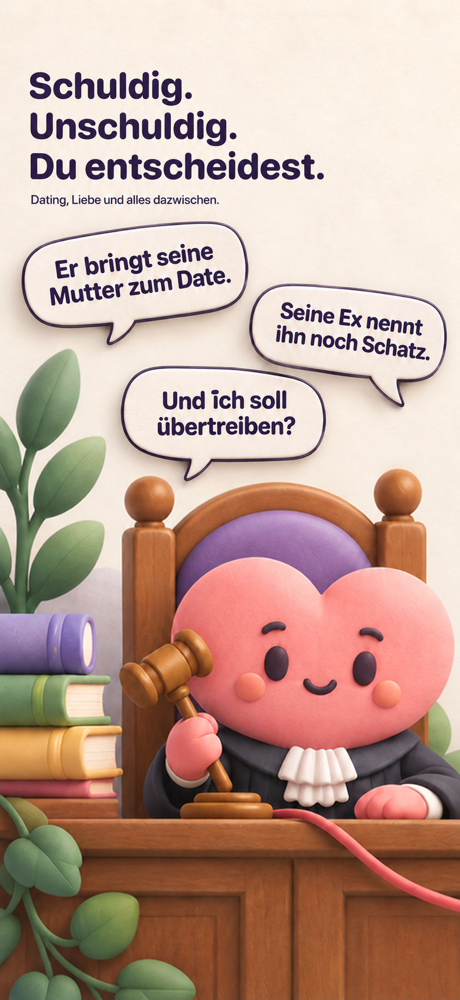
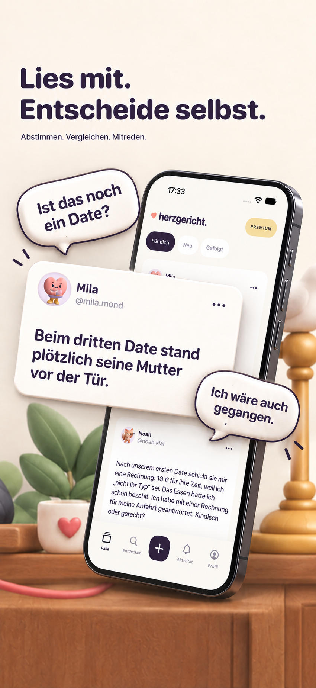
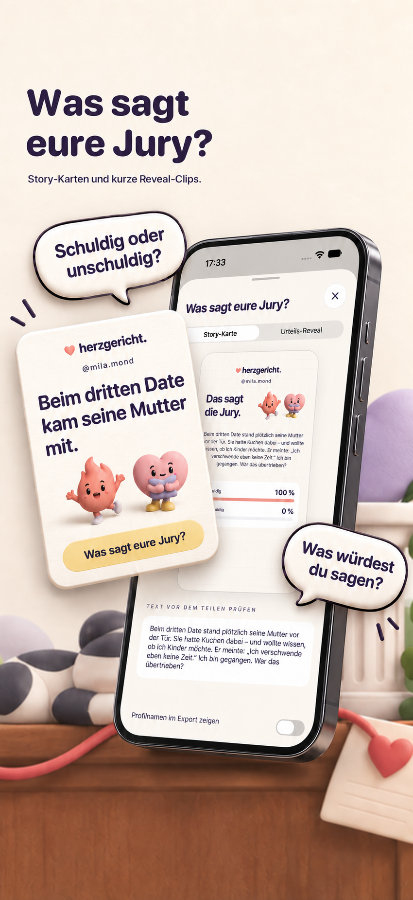

Was ist passiert?
Dating, Liebe und alles dazwischen. Kurze Fälle bringen die Situation auf den Punkt.
Liebe ist kompliziert. Lies kurze Beziehungsgeschichten, gib dein Urteil ab und entdecke, wie andere die Situation sehen.
Entdecke HERZGERICHT ↓Die App ist noch nicht im App Store verfügbar.
Die Community wird vor dem Start im Testbetrieb geprüft.

Dating, Liebe und alles dazwischen. Kurze Fälle bringen die Situation auf den Punkt.
Gib dein Urteil ab. Erst danach siehst du, wie die Jury abgestimmt hat.
300 Zeichen für deine Geschichte. Mit Profil oder für andere anonym.
Abstimmen, vergleichen und mitreden.

Story-Karten und kurze Reveal-Clips.

Lesen, normale Fälle erzählen, abstimmen, antworten und grundlegendes Teilen bleiben kostenlos. Mit dem optionalen Monatsabo entfernst du Werbung und erstellst Abstimmungen mit zwei bis vier eigenen Antwortoptionen.
Premium · 3,99 € / Monat
Geplanter Preis für Deutschland. Das Monatsabo verlängert sich automatisch und ist über Apple kündbar. Zahlung über deinen Apple-Account. Preis und Bedingungen werden vor dem Kauf in der App angezeigt. Aktuell werden noch keine Abos auf dieser Website verkauft.
Wir diskutieren Verhalten und respektieren Menschen. Keine privaten Chats oder echten Daten anderer. Inhalte lassen sich melden, Profile blockieren und eigene Konten löschen.
Zum Start gibt es gekennzeichnete redaktionelle Profile und fiktive Geschichten. Community-Meinungen sind persönliche Perspektiven und keine professionelle Beratung.
Fragen? Wir hören zu ↗